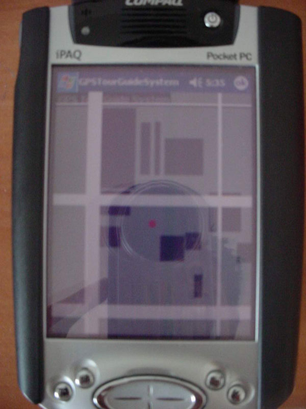
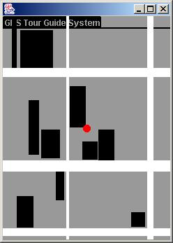

GPS Tour Guide System:
The Global Positioning System (GPS) Tour Guide System is a client/server application which will provide a self-guided tour of The George Washington University (GW) with audio feedback. The client is a Personal Digital Assistant (PDA), and the server is a Personal Computer (PC). The client is a Compaq iPaq 3850, with a dual slot expansion pack, providing the ability to have a Pharos GPS Receiver as well as an 802.11b Wifi card attached to the unit.
Users will take a tour of GW with its already installed buildings and streets. The map uses Vector graphics to generate the objects on screen. The GPS data acquired is sent to the server over 802.11b Wifi connection where the data is processed. Audio will be returned to the client if the user is close to any building describing the user's current location. The Server acquires information about GW's buildings from a MYSQL Database Management System.

